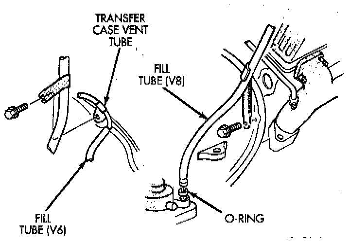
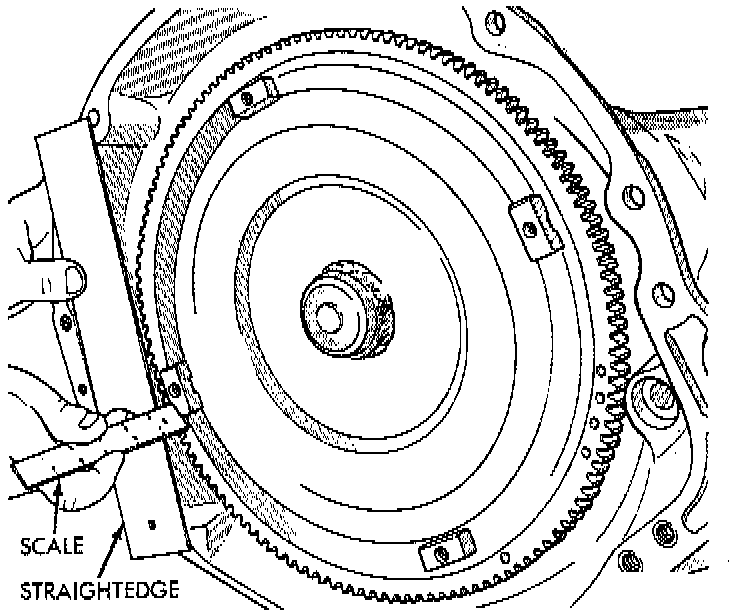

Removal and Replacement
NOTES:- The overdrive unit can be removed and serviced separately. It is not necessary to remove the entire transmission assembly to perform overdrive unit repairs.
- If only the overdrive unit requires service, refer to the overdrive unit removal and installation procedures.
CAUTION: The transmission and torque converter must be removed as an assembly to avoid component damage. The converter drive plate, pump bushing, or oil seal can be damaged if the converter is left attached to the driveplate during removal. Be sure to remove the transmission and converter as an assembly.
REMOVAL
1. Disconnect battery negative cable.
2. Disconnect and lower or remove necessary exhaust components.
3. Remove engine-to-transmission bending braces.
4. Disconnect fluid cooler lines at transmission.
5. Remove starter motor.
6. Disconnect and remove crankshaft position sensor. Retain sensor attaching bolts.
CAUTION: The crankshaft position sensor will be damaged if the transmission is removed, or installed, while the sensor is still bolted to the engine block, or transmission. To avoid damage, be sure to remove the sensor before removing the transmission.
7. Remove torque converter access cover.
8. If transmission is being removed for overhaul, remove transmission oil pan, drain fluid and reinstall pan.

9. Remove fill tube bracket bolts and pull tube out of transmission. Retain fill tube O-ring. It will also be necessary to remove bolt attaching transfer case vent tube to converter housing.
10. Mark torque converter and drive plate for assembly alignment. Note that bolt holes in crankshaft flange, drive plate and torque converter all have one offset hole.
11. Rotate crankshaft in clockwise direction until converter bolts are accessible. Then remove bolts one at a time. Rotate crankshaft with socket wrench on dampener bolt.
12. Mark propeller shaft and axle yokes for assembly alignment. Then disconnect and remove propeller shaft. Remove both propeller shafts.
13. Disconnect wires from [1][2]park/neutral position switch, transmission solenoid, and vehicle speed sensor.
14. Disconnect gearshift cable from transmission manual valve lever.
15. Disconnect throttle valve cable from transmission bracket and throttle valve lever.
16. Disconnect shift rod from transfer case shift lever or remove shift lever from transfer case.
17. Disconnect transmission fluid cooler lines at transmission fittings and clips.
18. Support rear of engine with safety stand or jack.
19. Raise transmission slightly with service jack to relieve load on crossmember and supports.
20. Remove bolts securing rear support and cushion to transmission and crossmember. Raise transmission slightly, slide exhaust hanger arm from bracket and remove rear support.
21. Remove bolts attaching crossmember to frame and remove crossmember.
22. Remove transfer case.
23. Remove all converter housing bolts.
24. Carefully work transmission and torque converter assembly rearward off engine block dowels.
25. Hold torque converter in place during transmission removal.
26. Lower transmission and remove assembly from under the vehicle.
27. To remove torque converter, carefully slide torque converter out of the transmission.
INSTALLATION
1. Check torque converter hub and hub drive notches for sharp edges burrs, scratches, or nicks. Polish the hub and notches with 320/400 grit paper and crocus cloth if necessary. The hub must be smooth to avoid damaging pump seal at installation.
2. Lubricate converter drive hub and oil pump seal lip with transmission fluid.
3. Lubricate converter pilot hub with transmission fluid.
4. Align converter and oil pump.
5. Carefully insert converter in oil pump. Then rotate converter back and forth until fully seated in pump gears.

6. Check converter seating with steel scale and straightedge. Surface of converter lugs should be 1/2 inch to rear of straightedge when converter is fully seated.
7. Temporarily secure converter with C-clamp.
8. Position transmission on jack and secure it with chains.
9. Check condition of converter driveplate. Replace the plate if cracked, distorted or damaged. Also be sure transmission dowel pins are seated in engine block and protrude far enough to hold transmission in alignment.
10. Raise transmission and align converter with drive plate and converter housing with engine block.
11. Move transmission forward. Then raise, lower or tilt transmission to align converter housing with engine block dowels.
12. Rotate converter so alignment marks scribed on converter are aligned with mark on driveplate.
13. Carefully work transmission forward and over engine block dowels until converter hub is seated in crankshaft.
14. Install bolts attaching converter housing to engine.
15. Install rear support. Then lower transmission onto crossmember and install bolts attaching transmission mount to crossmember.
16. Remove engine support fixture.
17. Install crankshaft position sensor.
18. Install vehicle speed sensor and speedometer adapter.
19. Install new plastic retainer grommet on any shift linkage rod or lever that was disconnected. Grommets should not be reused. Use pry tool to remove rod from grommet and cut away old grommet. Use pliers to snap new grommet into lever and to snap rod into grommet at assembly.
20. Connect gearshift and throttle valve cable to transmission.
21. Connect wires to [1][2]park/neutral position switch, transmission solenoid(s) and oxygen sensor. Be sure transmission harnesses are properly routed.
CAUTION: It is essential that correct length bolts be used to attach the converter to the driveplate. Bolts that are too long will damage the clutch surface inside the converter.
22. Install torque converter-to-driveplate bolts. Tighten bolts to 31 Nm (270 inch lbs.).
23. Install converter housing access cover.
24. Install starter motor and cooler line bracket.
25. Connect cooler lines to transmission.
26. Install transmission fill tube. Install new seal on tube before installation.
27. Install exhaust components.
28. Install transfer case.
29. Align and connect propeller shaft(s).
30. Adjust gearshift linkage and throttle valve cable if necessary.
31. Lower vehicle.
32. Fill transmission with MOPAR ATF+4, Type 9602 fluid, or equivalent.